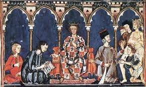

Bloque I
Consta de preguntas cortas y largas, más dos prácticas.Se estudiarán los acontecimientos desde el año 218 a.C.-1474. Se dividirá en cinco puntos.



| Etapa | Cronología | Eventos Clave |
|---|---|---|
| Prehistoria | Desde los primeros homínidos (Atapuerca) hasta 218 a.C. | Primeros asentamientos, culturas íbera y celta, arte rupestre franco-cantábrico y levantino. |
| Edad Antigua | 218 a.C. - 476 d.C. (aprox.) | Colonizaciones fenicias, griegas y cartaginesas. Conquista romana de la península (218 a.C. Desembarco de Ampurias). Romanización de Hispania. Invasiones germánicas (suevos, vándalos, alanos) y establecimiento del reino visigodo. |
| Edad Media | 476 - 1492 | Reino visigodo de Toledo. Invasión musulmana (711). Establecimiento de Al-Ándalus (emirato y califato de Córdoba). Inicio de la Reconquista cristiana (Batalla de Covadonga, 722). Formación de los reinos cristianos (Castilla, Aragón, León, Navarra, Portugal). Unión dinástica de los Reyes Católicos (1469). Toma de Granada (1492). |
| Edad Moderna | 1492 - 1789 | "Descubrimiento" de América (1492). Expansión del Imperio español con los Austrias (Carlos I, Felipe II). Siglo de Oro español. Crisis del siglo XVII. Llegada de los Borbones (Guerra de Sucesión, 1701-1713) e implantación del absolutismo. Despotismo Ilustrado (Carlos III). |
| Edad Contemporánea | 1789 - Actualidad | Guerra de la Independencia (1808-1813). Constitución de Cádiz ("La Pepa", 1812). Pérdida de las colonias americanas. Alternancia entre liberales y moderados. Primera República (1873-1874). Restauración borbónica (1874-1923). Crisis de 1898 (pérdida de Cuba). Dictadura de Primo de Rivera (1923-1931). Segunda República (1931-1936). Guerra Civil Española (1936-1939). Dictadura de Francisco Franco (1939-1975). Transición a la democracia (1975-1982). Monarquía parlamentaria (Juan Carlos I, Felipe VI). Integración en la UE (CEE). |